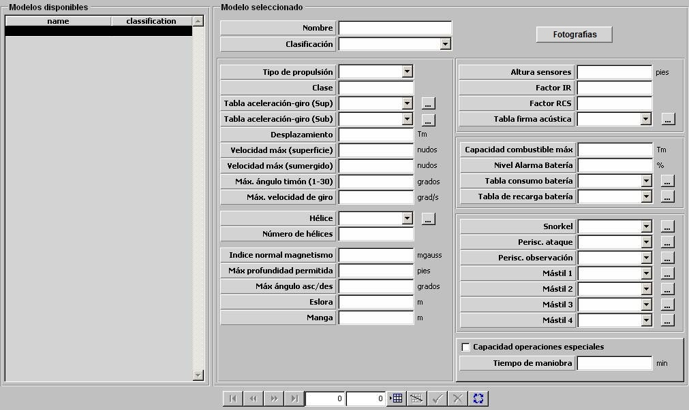

Plataformas Submarinos

Descripción de los parámetros:
Fotografías: Pulsando este botón se accede a la ventana de Fotografías desde la que se pueden incluir varias fotografías de una plataforma, asociadas a distintos niveles de reconocimiento. Durante la ejecución del ejercicio, cuando se sitúe el Hook en una detección, dependiendo del nivel de reconocimiento de la misma se mostrará una de estas fotografías.
Para las plataformas submarinas se consideran 6 niveles de reconocimiento.

En esta ventana pulsando en los botones Nivel 1 (2,3, 4, 5 ó 6) se accede al navegador desde el que se puede buscar y cargar una imagen.
Pulsando el botón Aceptar se cierra la ventana y se guardan en memoria todas las imágenes cargadas hasta que finalmente se acepten o rechacen los datos de la plataforma en edición.
Tipo de Propulsión: Puede tomar los siguientes valores:
- NUCLEAR
- DIESEL
- AIP
Este parámetro determina la clasificación de los contactos correspondientes a esta plataforma obtenidos por los sensores de otras unidades. Además, si el tipo de propulsión es NUCLEAR, se considera que la plataforma no consume batería ni combustible.
Clase: Campo alfanumérico de hasta 30 caracteres que describe la clase de la plataforma.
Tabla de Aceleración y Giro (Sup): Tabla de aceleración y giro aplicada cuando el submarino se encuentra en superficie. Ver apartado Aceleración y Giro de Superficie y Submarinos.
Tabla de Aceleración y Giro (Sub): Tabla de aceleración y giro aplicada cuando el submarino se encuentra sumergido. Ver apartado Aceleración y Giro de Superficie y Submarinos.
Desplazamiento: Este parámetro es tenido en cuenta por los modelos de sensores para calcular la distancia a la que esta plataforma es detectada y por el modelo de daños para calcular los daños producidos a esta plataforma debido a impactos de las distintas armas. También influye en la probabilidad de impacto sobre esta plataforma de minas y cañones.
Unidades: toneladas
Rango: 0,1 – 999999,9
Velocidad Máxima (Superficie): Este parámetro es tenido en cuenta por el modelo de dinámica como límite de velocidad para la plataforma cuando se encuentra en superficie.
Unidades: nudos
Rango: 0 – 100
Velocidad Máxima (Sumergido): Este parámetro es tenido en cuenta por el modelo de dinámica como límite de velocidad para la plataforma cuando se encuentra sumergida.
Unidades: nudos
Rango: 0 – 100
Máximo ángulo de Timón: Este parámetro es tenido en cuenta por el modelo de dinámica como límite de timón para la plataforma.
Unidades: grados
Rango: 1 – 30,00
Máxima Velocidad de Giro: Este parámetro es tenido en cuenta por el modelo de dinámica como límite de velocidad de giro para la plataforma.
Unidades: grados / segundo
Rango: 1 – 99,9
Hélice: Ver apartado Hélices.
Número de Hélices: Este parámetro es tenido en cuenta por el modelo de sonar pasivo.
Unidades: ---
Rango: 0 – 9
Índice Normal de Magnetismo: Este parámetro determina el valor del campo magnético a menos de 15 metros, expresado en mgauss. Es tenido en cuenta por el modelo de zonas minadas para determinar si se producen daños en la plataforma cuando ésta se encuentra dentro de dicha zona.
Unidades: mgauss
Rango: 0 – 2000
Máxima Profundidad Permitida: Este parámetro es tenido en cuenta por el modelo de dinámica como límite de profundidad para la plataforma cuando se encuentra sumergida.
Unidades: pies
Rango: 0 – 99999
Máximo Ángulo de Ascenso / Descenso: Este parámetro es tenido en cuenta por el modelo de dinámica como límite máximo del ángulo de ascenso / descenso para cambios de profundidad de la plataforma.
Unidades: grados
Rango: 0 – 90
Eslora: Este parámetro es tenido en cuenta por el modelo de visual para calcular la distancia a la que esta plataforma es detectada.
Unidades: metros
Rango: 1 – 999
Manga: Este parámetro es tenido en cuenta por el modelo de visual para calcular la distancia a la que esta plataforma es detectada.
Unidades: metros
Rango: 1 – 99
Altura Sensores: Altura de instalación de los sensores en la plataforma. Este parámetro influye en los modelos de sensores, tanto para determinar el alcance de los sensores propios como para determinar el alcance al que es detectada esta plataforma por sensores de otras unidades.
Unidades: pies
Rango: 1 – 999
Factor IR: Factor que modela la variación de Tamaño IR de la plataforma con el "Aspecto" (dado por el ángulo alfa = rumbo del contacto - marcación del contacto) de la unidad.
Unidades: Tanto por uno
Rango: 0,0 – 1,0
Ejemplo:
Si Factor IR = 0 ⇒ Tamaño IR = Tamaño IR · seno (alfa).
Si Factor IR = 0,25 ⇒ Tamaño IR = Tamaño IR ( 0,25 + 0,75 · seno (alfa) ).
Si Factor IR = 1 ⇒ Tamaño IR no cambia con Aspecto.
Factor RCS: Factor que modela la variación de RCS de la plataforma con el "Aspecto" (dado por el ángulo alfa = rumbo del contacto - marcación del contacto) de la unidad.
Unidades: Tanto por uno
Rango: 0,0 – 1,0
Ejemplo:
Si Factor RCS = 0 ⇒ RCS = RCS · seno (alfa).
Si Factor RCS = 0,25 ⇒ RCS = RCS ( 0,25 + 0,75 · seno (alfa) ).
Si Factor RCS = 1 ⇒ RCS no cambia con Aspecto.
Tabla de Firma Acústica: Ver apartado Firma Acústica de Submarinos.
Capacidad Máxima de Combustible: Este parámetro es tenido en cuenta por el modelo de dinámica en la simulación de consumos y recargas de combustibles. El tanto por ciento de combustible inicial de una unidad se calcula sobre este valor. Sólo podrá ser introducido si el Tipo de Propulsión NO es NUCLEAR.
Unidades: toneladas
Rango: 0 – 9999,9
Nivel de Alarma de Batería: Este parámetro es tenido en cuenta por el modelo de dinámica en la simulación de consumos y recargas de combustibles, de tal forma que se muestra una alarma cada vez que el tanto por ciento de batería disponible del submarino pasa a ser inferior a este valor. Sólo podrá ser introducido si el Tipo de Propulsión NO es NUCLEAR.
Unidades: toneladas
Rango: 0 – 99,99
Tabla de Consumo Batería: Ver apartado Consumo de Batería de Submarinos. Este parámetro sólo podrá ser introducido si el Tipo de Propulsión NO es NUCLEAR.
Tabla de Recarga de Batería: Ver apartado Recarga de Batería de Submarinos. Este parámetro sólo podrá ser introducido si el Tipo de Propulsión NO es NUCLEAR.
Snorkel: Mástil asociado al Snorkel del submarino. Ver apartado Mástiles de Submarinos.
Periscopio de Ataque: Mástil asociado al Periscopio de Ataque del submarino. Ver apartado Mástiles de Submarinos.
Periscopio de Observación: Mástil asociado al Periscopio de Observación del submarino. Ver apartado Mástiles de Submarinos.
Mástil 1 - 4: Mástiles de submarinos para sensores y comunicaciones. Ver apartado Mástiles de Submarinos y Configuración de Mástiles en Preparación de Unidades.
Capacidad de Operaciones Especiales: Determina si la plataforma tiene capacidad de llevar a cabo operaciones especiales.
Tiempo de Maniobra: Este parámetro determina el tiempo requerido para completar la operación.
Unidades: minutos
Rango: 0 – 99